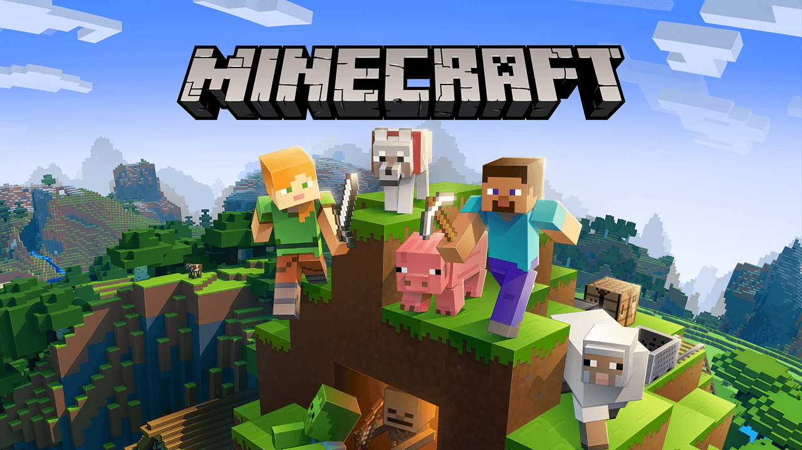

Minecraft
Minecraft is a popular sandbox game that was released in 2011. The game allows players to explore and build in a 3D world using a variety of blocks. It offers endless possibilities for creativity and exploration, with regular updates adding new features and content to the game.
Positive aspects
- Endless possibilities for creativity and exploration
- Multiplayer mode allows players to collaborate and create together
- Regular updates add new features and content to the game
- Modding community provides additional ways to customize the game
Negative aspects
- Graphics can be outdated and unappealing to some players
- Steep learning curve for new players
- Can become repetitive after extended play
- Lack of clear objectives or goals may not appeal to all players